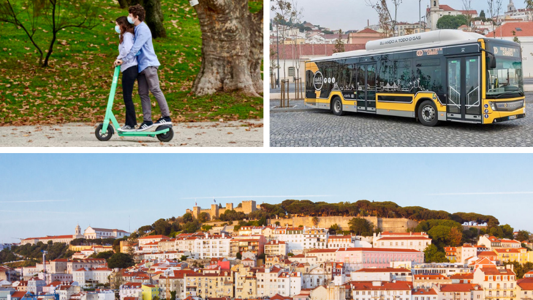

07 April 2020
by Christopher Carey
Christopher Carey speaks with Miguel Gaspar, Lisbon’s Deputy Mayor for Mobility and Safety, about keeping citizens,
regulators and operators happy in a world of fast-changing priorities
Ten years ago, Lisbon was in dire straits. The 2008 financial crisis had hit the Portuguese capital hard and its
citizens faced uncertainty, high unemployment and a decaying infrastructure.
Tough steps were taken to get the country back on track, which included a bruising austerity programme imposed by the
EU, the IMF and the European Central Bank.
But looking at the city today–with its regenerated buildings and busy streets–the mood has changed. There is an optimism
flowing through the capital reflected in the boom in tourists and tech workers cramming on to the city’s sleek trams or
riding the latest e-scooters.
In 2018, Lisbon became the first Portuguese city to win the European Commission’s €350,000 Green Capital award, with the
jury lauding it as “an inspiration and role-model for cities across the EU, demonstrating clearly that sustainability
and economic growth go hand in hand.”
“People who visited 10 years ago and come back now always say how different things are—they can understand the change,
it’s very visible,” says Miguel Gaspar, Lisbon’s Deputy Mayor for Mobility and Safety.
A civil engineer by trade, Gaspar has spent the past 16 years working in transport, both in the public and private
sectors. He has been instrumental in developing the city’s mobility strategy, which is focused on increasing sustainable
travel while giving public space back to residents.
“We want to return the city to the citizens,” says Gaspar, who became Deputy Mayor in 2017. “In my role [as Deputy
Mayor] I was offered the opportunity to take action, to be part of a political project that has an impact on city life.”

While he welcomes the recognition that awards bring–the city also won the European Mobility Week award in 2018 for
raising awareness of sustainable mobility–he is keen to emphasise that the city should not rest on its laurels.
“The reason why we won these awards is not because we have the best KPIs or performance in all areas, it’s because of
our willingness to change,” notes Gaspar. “For us these awards are not some career achievement prizes, they are a
starting point to renew our commitment and keep pushing.”
changing landscape
Gaspar is working alongside Lisbon’s municipal transport company, Carris, to push through new park and ride projects and
bus corridors and to increase the number of electric vehicles in use in the public transport system. Capacity is
growing, with the planned acquisition of 420 buses and 25 trams by 2023 to respond to growing demand, in what will be a
€252 million investment.
The strategy is part of a target to shift 150,000 motorists to more sustainable modes of travel by 2030.
“One of the biggest challenges we face is our commitment to hitting carbon emissions targets by 2030,” says Gaspar. “To
be honest it’s not a lot of time, because 10 years is like one day in city life. Time goes by very quickly.”
This drive towards more eco-friendly modes of mobility has also seen Lisbon embrace micro-mobility, and, in particular,
the e-scooter phenomenon—there are currently over 12,000 in the city operated by nine companies.
It is impossible to walk along its winding streets without encountering one. Public opinion, however, is still sharply
divided with some seeing e-scooters as the perfect solution to city centre journeys, while others consider them an
unwelcome scourge on the streets.
In July last year the council for the district of Santa Maria Maior–which oversees much of the historic centre and the
neighbouring areas–introduced fines of between €60 and €300 for companies whose rented scooters litter sidewalks and
public spaces.
The council also banned the parking of scooters on pavements and in places that “obstruct vehicles on pavements” and
introduced a removal fee to be covered by the companies.
The regulation also extends to shared bicycles parked carelessly in public spaces, Portuguese newspaper Publico
reported.
Lisbon Municipal Police claimed to have removed over 1,800 poorly parked scooters between February and June 2019,
charging fees of over €17,000.
Despite this, Gaspar says Lisbon’s attitude has been based on engaging with the operators, rather than taking an overly
strict approach.
“First and foremost, we are very open to innovation in the city, but with two red lines—public safety and the quality of
public space. Secondly, we view new things through the lens of soft and hard regulation, why? Because we also need to
learn how to regulate.”
Gaspar says that this engenders trust with private sector operators who understand they need to engage the city in a
dialogue where both need to converge on their positions.
He and his team meet with representatives from the micro-mobility sector every two weeks, where they discuss their
concerns and work on fine-tuning the rules, when necessary.
“I think both sides put in their best efforts to make it work, and I think this kind of regulatory environment has
helped make Lisbon an interesting location to deploy these kinds of services,” adds Gaspar.
“Sometimes we make decisions they don’t like, but they understand why we have to take them. If we understand where
they’re coming from, we can try to position things in a way that achieves the same results but without harming the
operational business model that they have.”
While allowing the private sector to operate e-scooters, the city has taken a more hands-on approach with other
micro-mobility modes. Though Uber’s Jump–and more recently Hive–have launched bike-share schemes in Portuguese capital,
it’s the municipal mobility company Gira that operates the lion’s share.
There are currently just over 450 shared-bikes being operated by the city provider, two-thirds of which are electric—an
important consideration when one looks at Lisbon’s cobbled streets and hilly terrain.
Looking to other cities for inspiration
When searching for new innovations and methods of getting results, the city has employed a relatively straightforward
approach.
“In Lisbon we believe that any good idea is an idea we should copy,” Gaspar says candidly.
He listed some of the cities that have inspired Lisbon’s transformation: Porto, Barcelona, Copenhagen, London and Los
Angeles.
“Copying others has accelerated our transformation because we don’t need to make the same mistakes,” explains Gaspar.
“If someone is doing something better than us, we will try to replicate that. We strongly believe that cities should
have strong networks and share experiences. Everything that we do we open to others to copy if they want.”
Lisbon was inspired by Los Angeles to become the first city in Europe to adopt the Mobility Data Specification (MDS),
which provides a template for data sharing for providers of dockless bike-shares, e-scooters and shared-ride providers
that work within the public right of way.
After its launch in Los Angeles in September 2018, Gaspar saw its potential benefits and has adapted it to his city’s
needs.
“Now all the e-scooter operators share their data with us and this improves decision-making. We’ve also started having
conversations with Los Angeles and are sharing what we’ve learnt from our experience to improve it further.
“I think cities need to get together in global networks to deal with global challenges.”
As micro-mobility has been taking cities by storm, other discussions surrounding the future of mobility, such as the
introduction of autonomous vehicles (AVs) and even flying taxis have been increasingly dominating discussions in
transport circles.
While always keeping an eye on the future, Gaspar says it’s important to stay grounded. Lisbon’s revival came from a
back-to-basics approach: deliver citizens and visitors the services they need to go about their daily business and your
city will thrive.
“It’s good to have someone speaking about what the future holds, asking what the ethical issues and technical challenges
behind the introduction of AVs are, for example, but we cannot put all our efforts into this if we don’t have a bus
arriving on time, a subway to reach certain parts of the city, or transport on-demand,” adds Gaspar. “There is a lot
that you can and should do in the present before riding the magic carpet.”
Sustainable mobility pact
In December 2019, the World Business Council for Sustainable Development (WBCSD), Lisbon City Council, BCSD Portugal and
56 leading companies signed the Corporate Mobility Pact (CMP), which commits to over 200 mobility actions designed to
make mobility more sustainable in Lisbon.
“Decarbonisation presents itself as the greatest challenge of our generation. We need to reduce our emissions and make
all types of transport more sustainable. Every day counts and every action is important,” Fernando Medina, Mayor of
Lisbon said.
The signatories will adopt a set of measures that aim to help the city have a safer, accessible, greener and more
efficient mobility system.
The pact aims to promote supply and demand for multi-modal solutions, firstly by creating conditions for employees to
adopt new behaviours and solutions, and also by extending these measures to suppliers and customers.